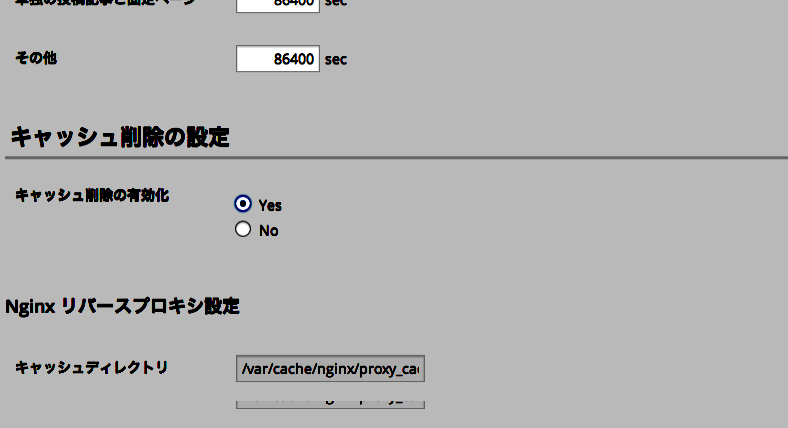

コードサンプル
IE8以下はHTML5に対応していませんがGoogle Codeで公開されているhtml5shivスクリプトを利用すればIE8以下でもHTML5のページを表示することが可能になります。
IE8以下はHTML5に対応していませんがGoogle Codeで公開されているhtml5shivスクリプトを利用すればIE8以下でもHTML5のページを表示することが可能になります。
IE8以下はHTML5に対応していませんがGoogle Codeで公開されているhtml5shivスクリプトを利用すればIE8以下でもHTML5のページを表示することが可能になります。
IE8以下はHTML5に対応していませんがGoogle Codeで公開されているhtml5shivスクリプトを利用すればIE8以下でもHTML5のページを表示することが可能になります。
imgのみ
blockquote / img
IE8以下はHTML5に対応していませんがGoogle Codeで公開されているhtml5shivスクリプトを利用すればIE8以下でもHTML5のページを表示することが可能になります。
blockquote / p
IE8以下はHTML5に対応していませんがGoogle Codeで公開されているhtml5shivスクリプトを利用すればIE8以下でもHTML5のページを表示することが可能になります。
blockquote / p / a
IE8以下はHTML5に対応していませんがGoogle Codeで公開されているhtml5shivスクリプトを利用すればIE8以下でもHTML5のページを表示することが可能になります。
cite / a
blockquote / cite / a
http://www.google.comIE8以下はHTML5に対応していませんがhttp://www.google.comで公開されているhtml5shivスクリプトを利用すればIE8以下でもHTML5のページを表示することが可能になります。
blockquote / q / cite / a
IE8以下はHTML5に対応していませんがhttp://www.google.comで公開されているhtml5shivスクリプトを利用すればIE8以下でもHTML5のページを表示することが可能になります。
IE8以下はHTML5に対応していませんがGoogle Codeで公開されているhtml5shivスクリプトを利用すればIE8以下でもHTML5のページを表示することが可能になります。